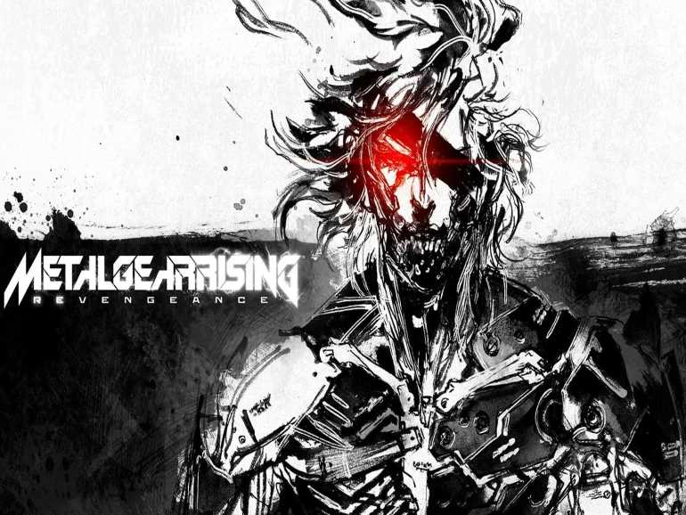
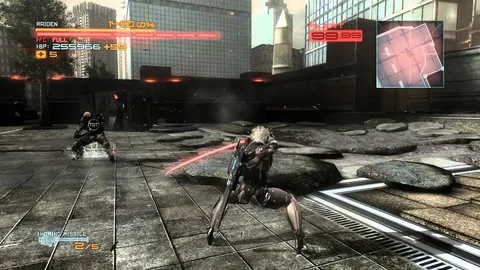
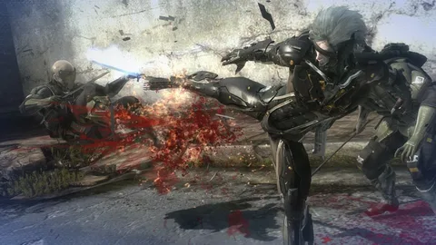
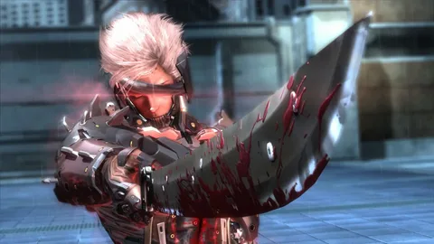
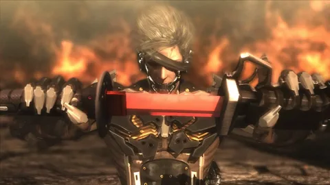
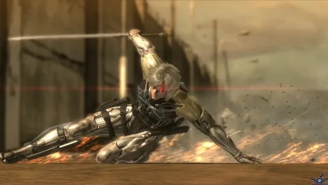
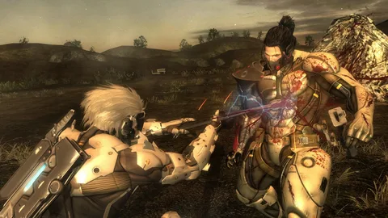

KojiFanSite
Главная
Игры
Кодзима
Авторы

Metal Gear Rising:
Revengeance
2013 · PS3, XBOX360, PC
Metacritic - 82/100
В роли Райдена - кибернетического ниндзя, дебютировавшего в Metal Gear Solid 2: Sons of Liberty и вновь вернувшегося на экраны в Metal Gear Solid 4: Guns of the Patriots, вам предстоит выдержать немало испытаний и, наконец, узнать, что же произошло после событий MGS4.
В недалеком будущем кибернетические технологии стали неотъемлемой частью мира. Через три года после развала режима Патриотов, долгое время контролировавших весь мир, ситуация на планете накалилась до предела.
Власть сосредоточена в руках тех, кому принадлежат технологии, большинство частных военных компаний PMC, ранее контролируемых Патриотами, превратились в криминальные синдикаты. Райден – сотрудник одной из организаций, сохранивших верность делу мира.
Великолепно подготовленный, экипированный по последнему слову техники киборг жаждет мести и не остановится ни перед чем, чтобы уничтожить Desperado Enterprises, одну из частных военных компаний.
  
В отличие от других игр серии, Metal Gear Rising — action-игра, где во главу угла поставлены сражения с использованием холодного оружия; особый режим Blade Mode позволяет прицельно разрубать врагов и объекты окружения на части, добиваясь как можно более эффектной победы.
Игра была первоначально анонсирована Kojima Productions в 2009 году под названием Metal Gear Solid: Rising; разработчикам не удалось построить интересный геймплей вокруг фехтования, как они планировали, и игра была сначала отложена, а в 2011 году передана другой студии Platinum Games, имевшей больший опыт разработки action-игр.
Игра получила высокие оценки критиков, особо отметивших режим разрубания, уместное использование характерных для серии Metal Gear тем и элементов, роковый саундтрек и напряженные бои с боссами.
  
@ Проект студентов из группы ИЭ-21
Быков Владислав, Чирин Юрий и Москаленко Дмитрий